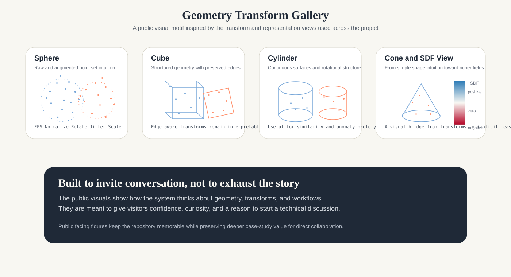

Strong enough to believe
The public repository shows architecture, validation, reproducibility, and working demos. It gives collaborators a fast reason to believe the work is serious, structured, and defensible.
GeoFusion AI is a public-facing showcase for 3D CAD understanding, multimodal retrieval, anomaly analysis, and engineering AI design. It is built to let the right person feel the depth of the work quickly, then want the conversation that follows.

The strongest technical portfolios do not only prove competence. They make visitors feel they have found someone who understands the problem deeply, thinks in systems, and knows what to keep private. GeoFusion AI is shaped around that standard.
Every number below is directly reproducible from scripts/public_eval.py on the synthetic public subset. No private data, no inflated claims.
| Area | Metric | Value |
|---|---|---|
| Classification | Top-1 accuracy | 1.0000 |
| Classification | Top-5 accuracy | 1.0000 |
| Retrieval | Recall@1 | 1.0000 |
| Retrieval | Recall@5 | 1.0000 |
| Retrieval | mAP | 1.0000 |
| Cross-modal | G→T Recall@5 | 1.0000 |
| Cross-modal | T→G Recall@5 | 1.0000 |
Evaluated on public synthetic subset: 5 geometry classes, 40 train / 10 test samples, 512-point clouds.
These figures translate the technical stack into something easy to scan and hard to forget. They help the repository feel like a deliberate artifact, not a folder that happened to become public.

The public repository shows architecture, validation, reproducibility, and working demos. It gives collaborators a fast reason to believe the work is serious, structured, and defensible.
The deeper case studies, private analyses, and higher-value narratives are intentionally held back. The public version opens the door without handing over the whole map.
The goal is not only to inform. It is to make the right engineer, hiring manager, or research partner feel that starting a conversation would be worth their time.
If you work at the intersection of geometry, manufacturing, simulation, retrieval, or applied AI systems, this repository is a strong entry point for conversation. The public work is broad enough to establish trust and focused enough to suggest where deeper collaboration can go next.
Direct contact is intentionally visible here because the point of this public release is not passive browsing. It is to make the next message easy to send.
Research contributions grounding the technical approach in peer-reviewed methodology.
Frontiers in Artificial Intelligence, 2025
IEEE Access, 2025
Frontiers in Built Environment, 2025
Machine Learning and Knowledge Extraction, 2024